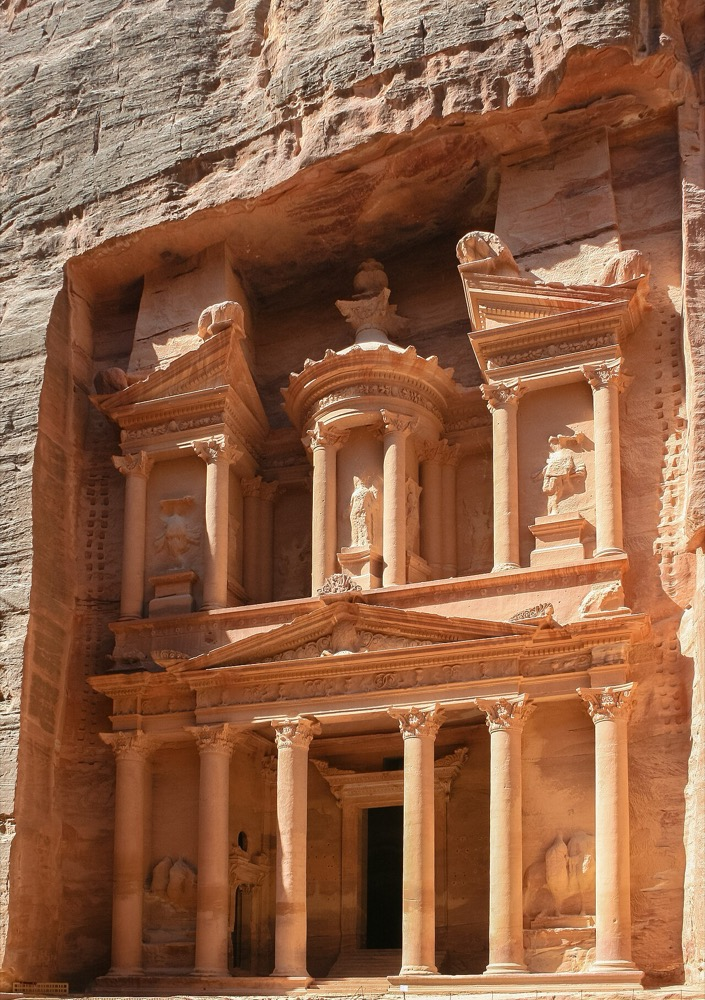

Иордания

Иордания собирает три мира на одну карту и одну неделю. Петра — сокровищница набатаев, вырезанная в розовом песчанике: вы идёте сквозь каньон Сик шириной в плечо, скалы сходятся сверху, и вдруг между стенами — фасад сокровищницы, от которого перехватывает дыхание. Jordan Pass — виза и билеты одной покупкой, экономика честная. В Петре ходите дальше сокровищницы — к монастыру Ад-Дейр наверх и к королевским гробницам: большинство разворачивается раньше. Вади-Рум — «марсианский» песок и силуэты гор, по которым Т.Э. Лоуренс водил верблюдов без GPS; ночь в бедуинском кемпе: огонь, хлеб на углях с заатаром, звёзды без счёта и дюны, которые молчат так убедительно. Мёртвое море — финал: вы плаваете, сидя в воде, как в кресле, соль держит, как кресло; грязь с берега — обязательная программа. Еда — левантийское золото: хумус, мутаббаль, маклуба и лимонад с мятой. Страна заканчивается быстрее, чем вы к ней привыкаете.
Что знать перед поездкой
- Jordan Pass — виза и билеты одним чеком
- Петра — идите к монастырю, большинство нет
- Мёртвое море — берите сандалии для воды